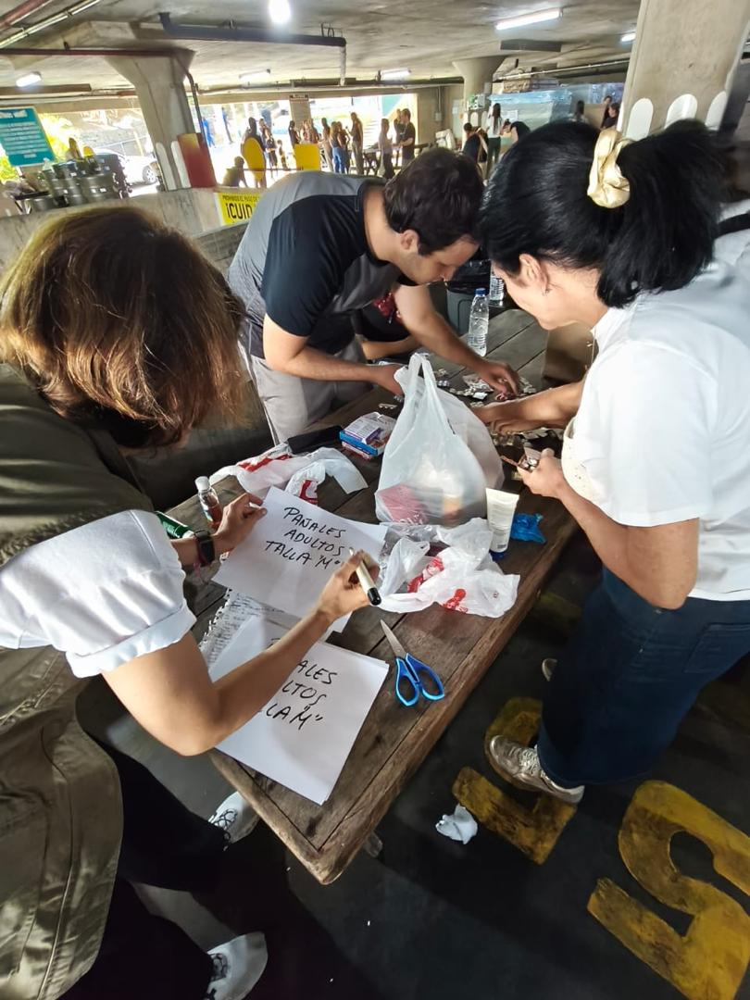
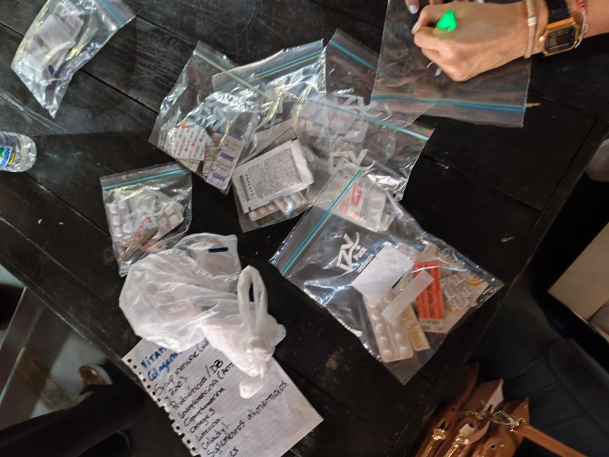
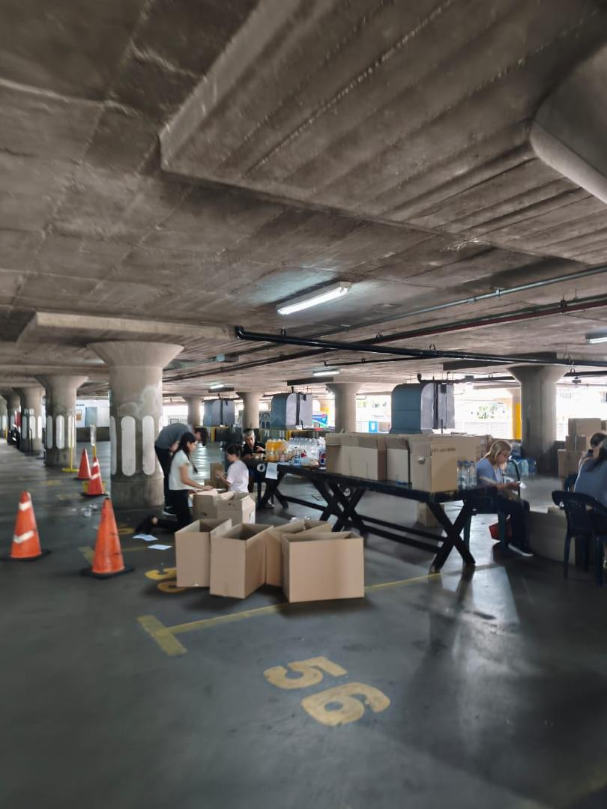
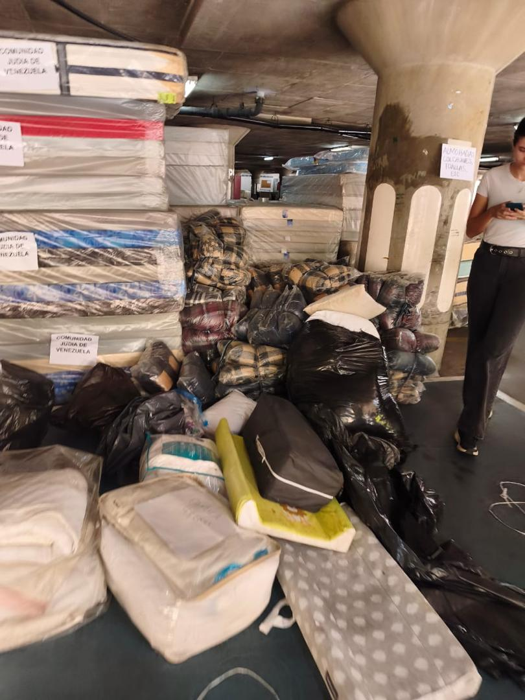
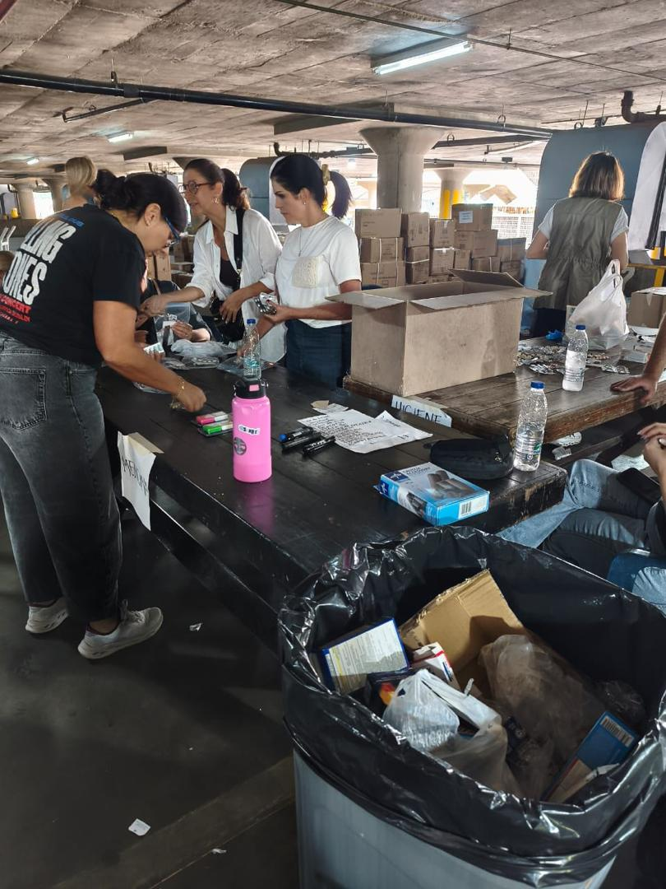
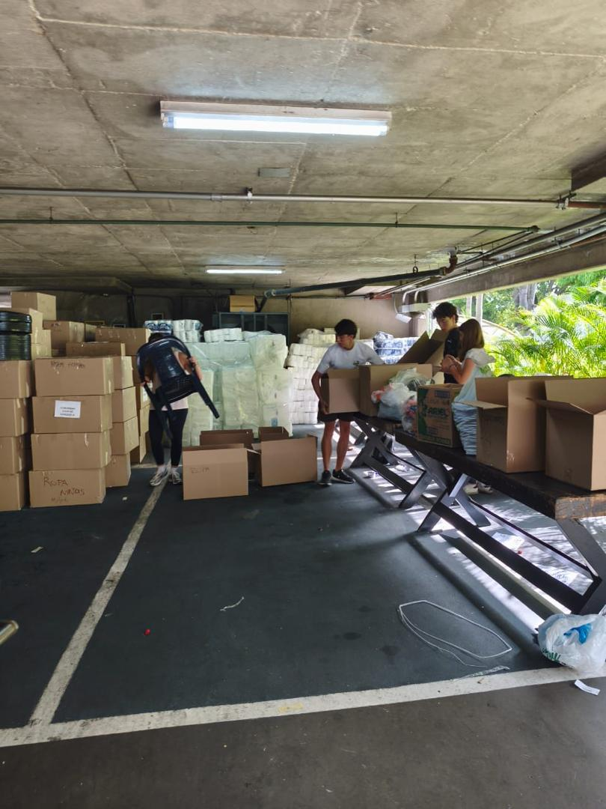
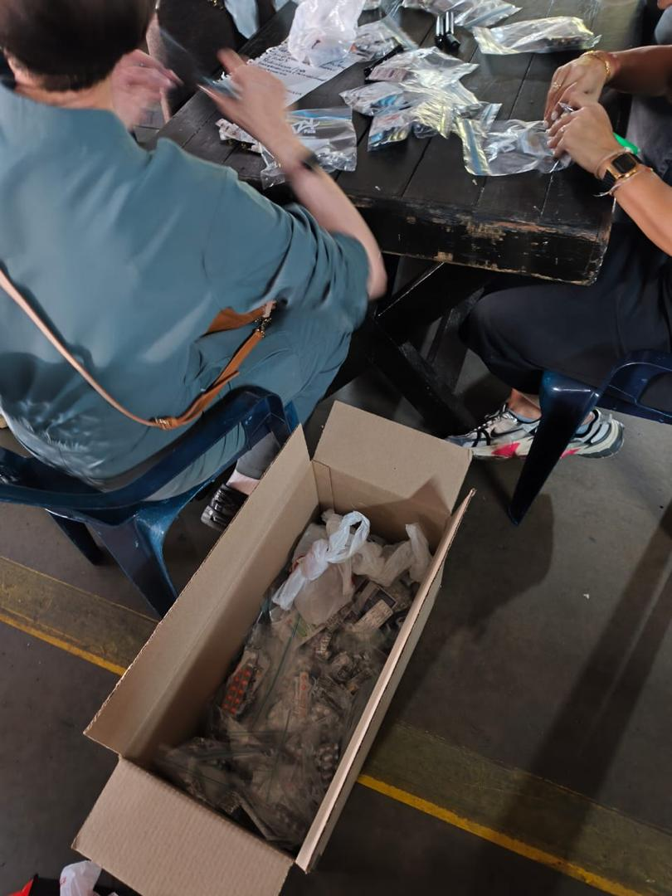

Más de 300 familias de nuestra comunidad
perdieron su hogar.
Dos terremotos sacudieron Venezuela el 24 de junio de 2026, con los mayores daños en La Guaira y Caracas. Muchas familias de la Comunidad Judía quedaron sin techo y sin alimento. Tu ayuda hoy decide cómo dormirán esta noche.
501(c)(3) — donativos deducibles de impuestos. EIN
$1,000 = una familia, un mes
Cubre alquiler temporal, comida y necesidades básicas para una familia afectada durante un mes completo.
Cada aporte cuenta
$36, $180 o lo que puedas: el 100% se destina a la asistencia en Venezuela.
El sismo más fuerte en más de un siglo
Según el Servicio Geológico de EE. UU. (USGS), un sismo de magnitud 7.2 fue seguido segundos después por uno de 7.5 cerca de San Felipe, estado Yaracuy. Los daños más graves se concentraron en La Guaira y Caracas, declaradas zonas de desastre. Es el terremoto más fuerte que vive Venezuela desde 1900.
Un techo y un plato de comida
Las familias que perdieron su vivienda necesitan refugio inmediato y alimento. Yajad coordina la entrega directa en Venezuela, priorizando a las familias más vulnerables de la comunidad: adultos mayores, niños y quienes lo perdieron todo.
Patrocinar una familia- 🏠 Alquiler temporal o reparación de emergencia
- 🍲 Alimentos para todo el grupo familiar
- 💊 Medicinas e insumos básicos
- 🤝 Acompañamiento y seguimiento de Yajad
La situación, contada desde Venezuela
Imágenes de la ayuda
Imágenes recientes de la red de asistencia social de la comunidad acompañando a las familias afectadas.







Tu donación de emergencia es deducible de impuestos
Friends of Yajad-Venezuela opera bajo , una organización 501(c)(3) reconocida por el IRS (EIN ). Recibirás un recibo válido para tus registros fiscales.